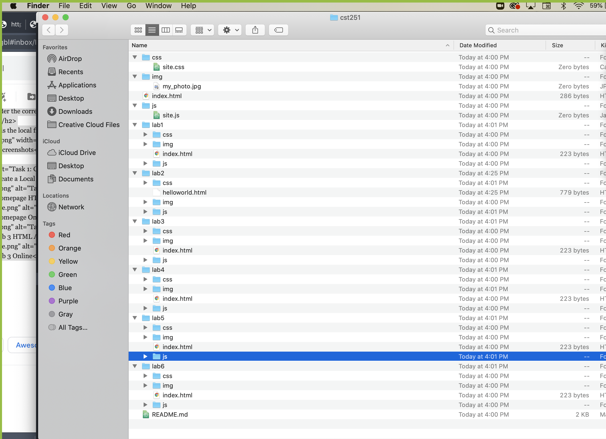

The idea of this lab was to create a local file structure on my computer for my cst251 folder, add labs, css, and image folders, and lastly add index.html files to each lab folder.
I have always been very interested in learning digital structure, so creating and maintaining file structures has always been interesting and a little challengiong but to an extent of learning.Along with this, our folders were already premade when we originally had created our respiratory with img, css, and index.html (also js). I did run into a problem with accidentally choosing the wrong index.html file so had to re arrange them within my folders a bit and make sure it was the correct one under the correct lab folder in Atom.
Here is the local file structure on my computer:
